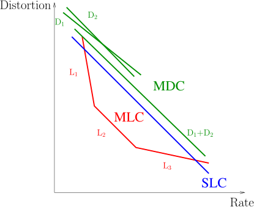

Media Encoding Models
Vicente González Ruiz
January 4, 2020
Contents
1 Single Layer Coding (SLC)
- Most audio and image/video codecs generate non-scalable streams. In the
case of video, only one quality, resolution and picture-rate are available at
decoding time.
- The decoding of a single layered stream generates a reconstruction whose
quality can be modeled as linearly proportional to the amount of decoded
data.
- A media encoded in several layers can be decoded to provide (in the
case of video) different picture-rates (time scalability), different resolutions
(spatial scalability) and different qualities (quality scalability).
- In some codecs (such as JPEG2000), spatial random access it is available
ROI (Region-Of-Interest) or WOI (Window-Of-Interest) scalability. ROI
is used in special imaging, such as mammography. WOI can useful in the
retrieving of high-resolution video sequences such as JHelioviewer.
3 Multiple Description Coding (MDC)
- Multiple description codecs provides a set of partially redundant streams
so that the quality of the reconstructions improve with the number of
descriptions decoded.
- An example of this type of encoding is the scene segmentation (video
object coding) provided by MPEG-4.
